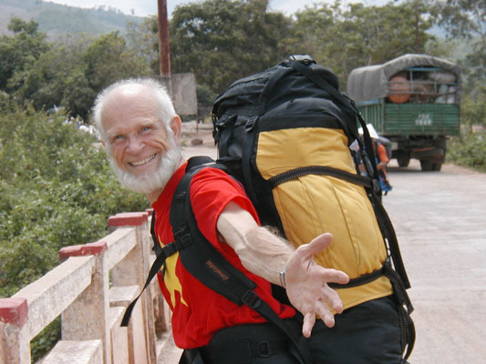

2003 Trav-E-Logs©
| Backpack Contents |  |
| back: alliterations | Backpack Straddles Viet Nam/Laos Border |
================================= This is the final page of one backpacker's missives in Southeast Asia from April to September 2003. Traveling is fun, educational, and an experience one never forgets. My belief is that as international travel increases, the more difficult it will be for governments to wage war. I traveled with a backpack, a daysack, a waist sack, and a passport pouch hung around the neck under my shirt. Here are the contents (less gifts) upon return. =================================
September, 2003
Passport pouch contents: Passport, ATM-debit card, cash, a few receipts.
Waist Sack contents: Binoculars; camera, PDA, screen guards and 6 spare AAA rechargeable batteries; 2 visa photos; pen refill; tictac case w/aspirin; 4-compartment daily pill box; reading glasses w/case & pen; led light & key on chain; towelets; coins; toothpick holder; business cards, note paper.
Daypack contents: 4-pound laptop w/ 30 GB HDD, CD RW/DVD drive, NIC, and 3 USB ports (wrapped in plastic bag). Backup CDRW, micro-mouse, phone cable, RJ45 cable, CD-R pen, memory card reader, USB cable, 3-way 220vac adapter, and blade/pin 220vac adapter. Bound memo pad, pens, compass, magnifying glass, matches, TP in zip-bag; water bottle sling; Plastic bag with writing tablet, maps, guides, various receipts, and train schedules; DEET repellant; disposable raincoat; nylon jacket in pouch; headlamp; small flashlight in bag; tri-pod; 2 water bottles; 2-way bottle holder; zip-bag w/toothpaste, travel toothbrush, comb, soap, razor, floss, mini Proxa brush, moleskin, toe bootie. (Paring knife, 22-function Swiss army knife, and knife-fork-spoon kit in pouch were lost by airline security.)
Backpack contents: 3 computer Recovery, 3 photo and 4 blank CDs. S.E.Asia shoestring guide, 2 pair airline booties, padlock, nylon shell in pouch, mini language dictionary and phrase books, shot record card, 2 pr. Socks, 220vac charger for AA, AAA, 9-volt batteries. Large ditty bag; 2 straps with buckles; 2 9-volt, and 3 AAA rechargeable batteries in case; camera USB cable; USB extension; 4 cord stops; 2 mini-bungee cords; repair 110 volt plug; travel alarm; drugstore reader glasses in large case, 220 volt light bulb w/outlet adapter; mini-tape recorder w/4 tapes, 2 spare AA batteries in pouch; zip-bag assortment; 2 small body towels in zip-bags; laundry soap; padded water bottle holder; silk PJ's in sock; 1 cotton and 1 silk sleeping bag liner in pouch; mosquito head net. Sammy towel; long pants for snorkeling. Snorkel fins and mask, 2 swim trunks, men's bathing cap, bath towel, long-sleeve tee; SPF 30 lotion w/ wet ones; fleece jacket/shirt. 3 each 70/30 cotton nylon convertible trousers, cotton short-shorts. Long- and short-sleeve cotton tees, some poly tees. 1 dress shirt. 8 socks & briefs. Rubber bands, cable ties, two-tip screwdriver; lots safety pins. Toiletry case filled with soap, medicines, mirror, travel alarm, first aid kit, clothesline, hooks, clothespins, tooth and finger care necessities.
2 twin-CD cases, backup software CDs. Traditional music CD's, and VCD's; money belt,; Viet Nam guide, glasses. Thailand guide; camera guide, 2 cables & CDs; new reading glasses w/case, No smoking etching plate, Double silk sleeping bag liner, ikat, 5 souvenir tees, tunic top. 2 cloth web belts with friction metal buckles. cotton sarong.
Pants pockets carried wallet, coins, maps, DEET, TP, and local translation dictionary.
Enjoy your life -- it's the only one you've got.
Bill
------------------------------
Email me at the juno.com address "dancer2SEAsia"
"The traveler discovers that all people are beautiful. It's the governments that are evil."
| back: alliterations |